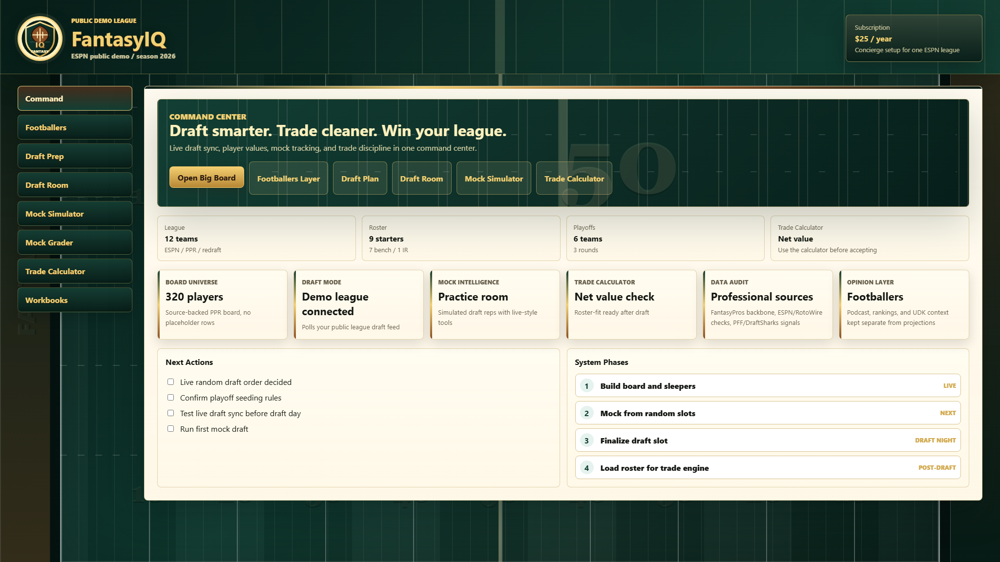

Live Draft Room
Syncs public ESPN draft picks, then turns board value, tier scarcity, and room pressure into one Alpha Signal.
 MyFantasyIQ
MyFantasyIQ
ESPN fantasy football dashboard
A premium command center for your ESPN fantasy football leagues with live public-league draft sync, league-aware boards, mock draft practice, and trade checks.
Free compatibility check
Enter your ESPN league ID, team ID, and season. FantasyIQ confirms the league is public, finds your team, and detects the scoring setup before you start checkout.
Self-serve setup
One account dashboard for up to three public ESPN fantasy football leagues. Additional leagues can be added for $5/year each.
Software subscription only. MyFantasyIQ does not collect league dues, hold prize pools, process winnings, operate contests, or guarantee outcomes.
What is included
Syncs public ESPN draft picks, then turns board value, tier scarcity, and room pressure into one Alpha Signal.
Live ESPN-driven boards with native scoring, tiers, risk flags, trends, and quick player analysis.
Practice draft slots, review roster shape, and test pick decisions before draft night.
Compare trade pieces and slow down impulsive offers after the draft.
Product preview
MyFantasyIQ is built around the decisions managers actually make: who is left, when your next pick arrives, whether a tier is about to dry up, and whether a trade improves your weekly lineup.

How setup works
The free setup check confirms public ESPN access and detects scoring, roster slots, team count, and draft rounds.
Checkout is handled by Stripe. The setup email lets you create a FantasyIQ password and open your dashboard.
Your dashboard stores league branding, team context, password login, and access-code backup.
Questions
No. MyFantasyIQ v1 uses public ESPN league data. Your league needs to be public for live sync.
You receive a setup email, create a password, validate each public ESPN league, then open your saved dashboard.
Live draft sync requires public ESPN data. Use the free compatibility check before checkout, or make the league public before relying on draft-day sync.
One account dashboard for up to three ESPN fantasy football leagues for one season, with self-serve setup and support.
No. MyFantasyIQ sells fantasy football dashboard software only. League dues, side bets, prize pools, and payouts are not part of the subscription.
Requirement
Private ESPN league authentication is not included in this v1. The setup check validates public league access before draft day, so make the ESPN league public before relying on live sync.